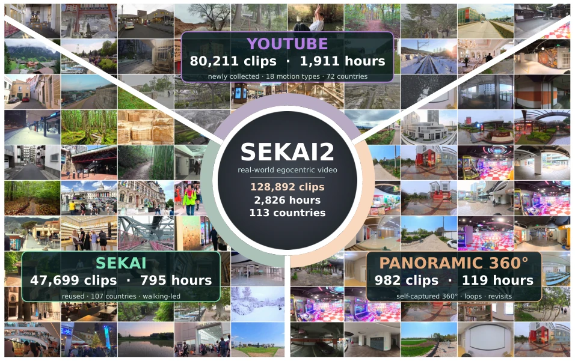
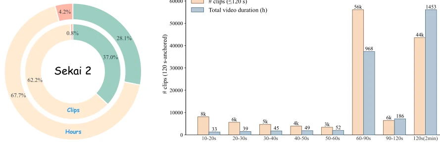
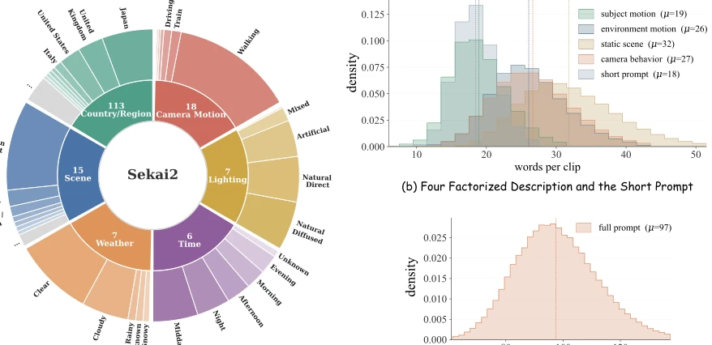
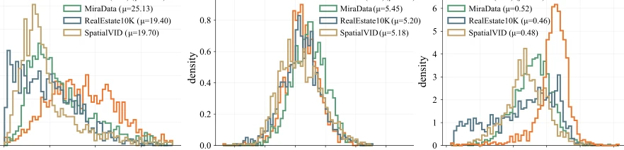
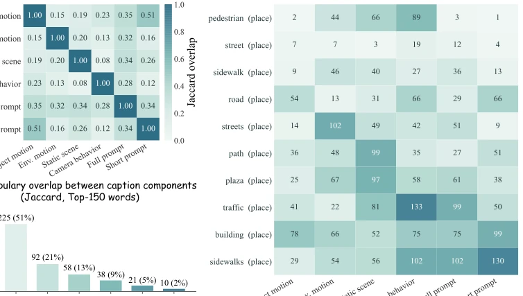
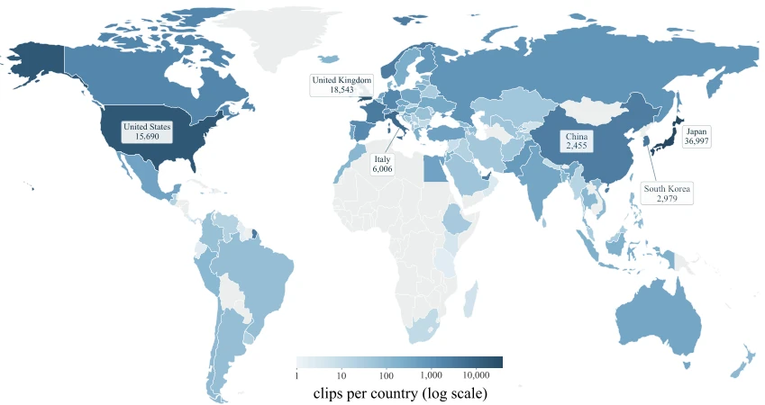
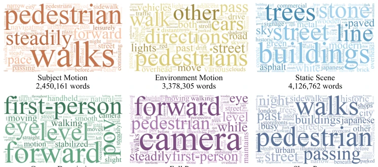
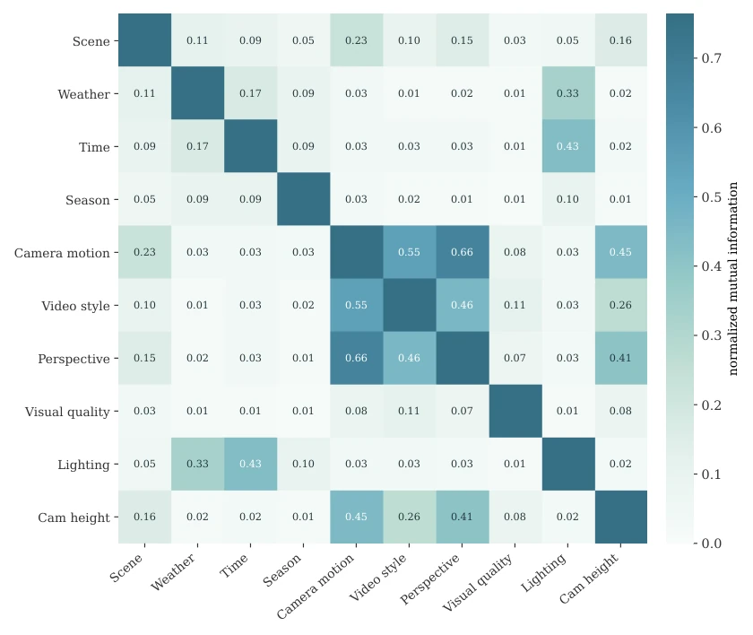
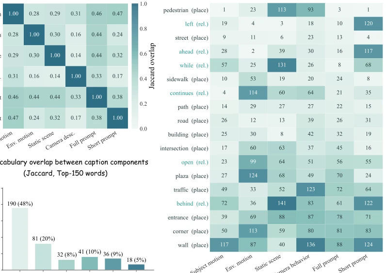
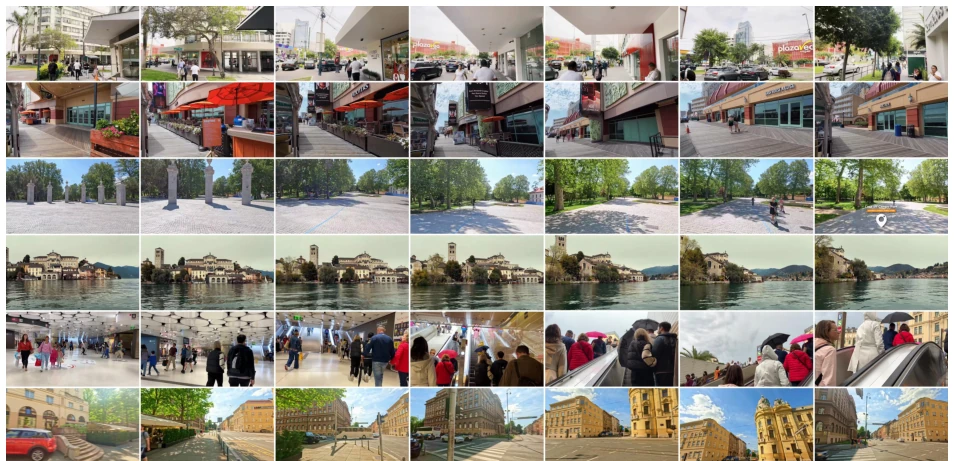

Sekai2: From World Exploration to Interactive World Modeling
Kang He, Wenshuo Peng, Zihui Gao, Jiaming Tan, Kaipeng Zhang, Yongtao Ge abspdf
论文点评Review
Sekai2 试图用“世界探索”的宏大叙事填补具身 AI 的短板，这招很聪明：既然模型需要“长视野”和“空间记忆”，那就给它们看够久的路。但别被 2800 小时的“海量”数据迷了眼，这本质上还是“缝合怪”——把旧数据重洗、YouTube 视频剪剪、再加点自己拍的 360 全景。最大的槽点在于：虽然号称“交互式世界建模”，但数据本身只是被动记录，模型能不能学会“记忆”和“重访”，还得看训练时的造化。而且，全景数据虽然提供了回路，但仅占 4%，对于训练真正的长程空间一致性，这点“甜点”够不够塞牙缝？不过，能把相机轨迹、语义标注和长视频强行对齐，确实比那些只有短片段和模糊文本的“快餐”数据集强多了，算是给世界模型训练喂了一顿稍微像样点的“硬菜”。
Sekai2 attempts to fill the shortcomings of embodied AI with the grand narrative of "world exploration," a strategy that is quite clever: since models require "long-range vision" and "spatial memory," simply provide them with sufficiently long road footage. However, do not be dazzled by the "massive" 2800 hours of data; essentially, it remains a "patchwork"—reprocessing old data, editing YouTube videos, and supplementing with self-shot 360-degree panoramas. The most significant criticism lies in the fact that, although claiming "interactive world modeling," the data itself is merely passive recording; whether the model can learn "memory" and "revisit" depends on the training conditions. Furthermore, while panoramic data provides loops, it accounts for only 4%; for training true long-range spatial consistency, is this "dessert" sufficient? Nevertheless, forcibly aligning camera trajectories, semantic annotations, and long videos is indeed far superior to "fast-food" datasets containing only short clips and vague text, effectively providing a more substantial "main course" for world model training.
The core pain point in constructing Interactive World Models lies in the inability of existing data to simultaneously satisfy three major requirements: "long-term continuity," "explicit camera trajectories," and "time-aligned semantics." Existing large-scale video-text corpora (such as WebVid [1], Panda-70M [7], OpenVid-1M [33]), while visually diverse, lack explicit camera trajectories and fine-grained time-aligned descriptions, leading to difficulties for models in distinguishing scene changes from viewpoint changes. On the other hand, spatial video datasets (such as RealEstate10K [60], DL3DV-10K [29], SpatialVID [46]), while providing camera poses, mostly focus on reconstruction or short-range control, lacking minute-level continuous evolution data. More critically, ordinary online videos rarely contain "Revisit" trajectories, yet revisits are crucial for training models to maintain long-term spatial memory and geometric consistency (as highlighted by WorldMem [54] and Infinite-World [52]). Sekai2 aims to address this data scarcity by providing real-world data containing long trajectories, camera control, and revisit structures to support long-term video generation and interactive modeling.

Figure 1 Composition and visual coverage of Sekai2. Each tile shows a frame from a released clip, grouped into three source sectors: the newly collected YouTube subset (80,211 clips; 1,912 h), the inherited Sekai subset (47,699 clips; 795 h), and self-captured panoramic videos (982 clips; 119 h). Panoramic tiles display the horizon band of the native equirectangular frame. The resulting corpus comprises 128,892 clips and 2,826 hours across 113 countries or regions. Every clip is paired with a released camera trajectory and structured global and temporally grounded annotations.
Sekai2 constructs a unified multi-source data engine encompassing data acquisition, long-segment construction, quality filtering, camera pose estimation, and hierarchical semantic labeling. First, data sources originate from three parts: reprocessed old Sekai data, newly collected YouTube videos (walking, driving, drones, etc.), and specially collected 360-degree panoramic videos (containing loops and revisits). In the long-segment construction phase, OmniShotCut is utilized to detect hard cuts and fades, segmenting videos into continuous clips not exceeding 120 seconds, while preserving the complete loop structure of panoramic videos. During the quality filtering phase, low-quality or static clips are eliminated via optical flow statistics, media quality checks, and OCR filtering, with a "low-motion supplement" branch established. Camera pose estimation employs ViPE for monocular reconstruction, combined with GeoCalib for intrinsic parameter initialization, introducing geometry-verified loop closure optimization for panoramic sequences to reduce cumulative drift. Semantic labeling adopts a hierarchical strategy: at the segment level, attributes such as geography, scene, and lighting, along with decoupled text descriptions (subject motion, environmental dynamics, static scenes, camera behavior) are provided; at the interval level, time segments are split based on scene changes, providing complete prompts (full_prompt) containing camera path labels and camera-removed prompts (short_prompt). Ultimately, 649,597 time-aligned semantic segments are formed, achieving unified supervision of vision, geometry, and semantics.

Figure 2 Scale, composition, and temporal extent of Sekai2. (a) Source composition by released clip count (inner ring) and footage duration (outer ring). (b) Duration distribution after representing all released videos as non-overlapping analysis segments of at most 120 s. The left and right axes show segment counts and aggregate duration, respectively.

Figure 3 Scene attributes and caption lengths. (a) Distribution of six controlled clip-level attributes. The inner ring reports the number of distinct values for each attribute, and the outer ring shows their empirical frequencies. (b) Word-count distributions of the four factorized descriptions and the short prompt. (c) Word-count distribution of the derived full prompt. Dashed lines indicate the means. Panels (b) and (c) are discussed in Sec. 4.6.
The paper conducted evaluations across three dimensions: visual quality, camera trajectory geometric consistency, and semantic labeling quality. Visually, Sekai2's LAION aesthetic score (5.23) is comparable to RealEstate10K, but optical flow magnitude and LPIPS are significantly higher, indicating it contains richer local dynamics. Regarding trajectory quality, the pose validity rate for all clips is 100%, reprojection error (Epipolar error) is extremely low (median 0.12px), and reconstruction experiments demonstrate good cross-run geometric consistency (rotation RPE 0.103°). Semantically, VLM evaluation indicates that structured labeling scores higher in coverage and scene correctness (4.28-4.31), and compared to single-sentence generation, the proportion deemed "more informative" for structured labeling reaches 68.4%. Vocabulary overlap analysis (Jaccard 0.16) confirms that decoupled descriptions possess significant semantic complementarity. The main finding is that Sekai2 successfully achieved the construction of real-world data featuring long-term duration, multi-views, and trajectories, and the data quality is sufficient to support long-range world model training, particularly the revisit structure provided by panoramic data offering key supervision for long-range spatial memory.

Figure 7 Intrinsic visual quality and temporal dynamics. Per-clip distributions of RAFT optical-flow magnitude, LAION aesthetic score, and Max-Running-LPIPS for Sekai2 and three representative corpora. Each dataset contributes 1,200 clips evaluated using the same models and preprocessing pipeline. Motion signals are computed over five adjacent frame pairs at a long-side resolution of 512, while the aesthetic score is averaged over individual frames.

Figure 9 Complementarity within the clip-level annotation schema. Each description type is represented by its 150 most frequent content words. (a) Pairwise Jaccard overlap between description types. (b) Number of description types in which each word from the union appears. (c) Within-description ranks of the ten words shared by all six descriptions, illustrating common scene context with different descriptive emphases.
其他图片Other Figures

Figure 4 Geographic coverage of Sekai2. The map shows the number of clips per country or region on a log10 scale, with grey indicating no available clips. The five largest contributors are labelled, together with China, where the panoramic subset was captured.

Figure 6 Lexical structure of the clip-level annotations. Word clouds visualize the most frequent content words in six annotation components, with word size proportional to within-component frequency. Colors distinguish components, and the values below each cloud report their total word counts. Quantitative analyses of their semantic complementarity are provided in Sec. 5.3.

Figure 11 Attribute dependence. Normalized mutual information between every pair of the ten clip-level attributes; the diagonal is self-information (1 by definition) and is drawn saturated. The colour scale follows the off-diagonal range so that the informative cells retain contrast.

Figure 13 Vocabulary of the six segment-level caption components. Panels follow Fig. 9: (a) pairwise Jaccard overlap of the top-150 content words, (b) the number of components in which each word of the union appears, and (c) the words present in all six lists with their rank inside each component.

Figure 14 Representative videos from the inherited Sekai subset. Each row is one sequence observed at seven uniformly distributed relative timestamps. From top to bottom: walking in Lima, rail travel in Atlantic City, cycling in Madrid, boating in Orta San Giulio, escalator travel in Munich, and walking in Zagreb. The panel spans urban streets, public spaces, recreation, water, and transport environments.